Lifebit: Information Architecture & Systems Design
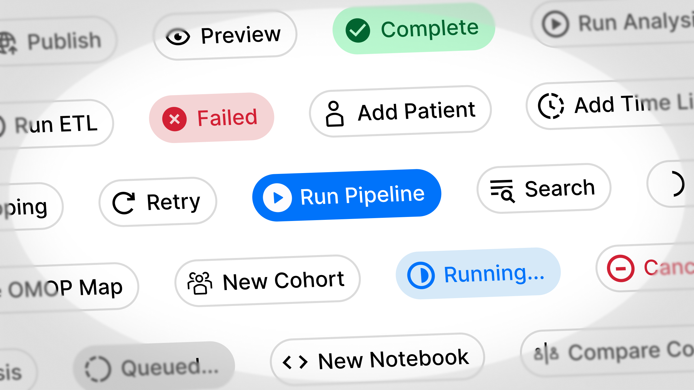
Impact
At Lifebit, I led the information architecture and navigation redesign for our biomedical analytics platform. As part of a quarterly OKR, we set out to solve user navigation friction and accommodate numerous new features on our roadmap. By applying Object-Oriented UX (OOUX) and systems thinking, we transformed an unscalable legacy interface into an intuitive, scalable product hierarchy. This eliminated navigational redundancy, reduced context-switching friction for scientists, and established a standardized design token library and hand-off cadence for engineering.
Challenges
The redesign was driven by qualitative user research sessions (journey mapping) and roadmap expansion needs. Researchers struggled to navigate complex multi-omic workflows, while product managers faced structural scalability limits.
Key problem areas included:
- Task resumption friction: Most participants found it difficult to pick up where they left off after logging out or switching tasks.
- Navigational redundancy: Users relied on only 1–2 items in the primary sidebar, leaving remaining nav items redundant.
- Illogical object relationships: Related entities lacked clear hierarchy (e.g. pipelines and interactive notebooks sat under projects, but cohorts sat at the top level without rationale).
- Abstract iconography: Nav items were displayed as icon-only buttons, preventing users from linking icons to specific app features (“I dread having to relearn everything, because I always forget where it is”).
- Unscalable workspace settings: Workspace settings had become a dumping ground for related and unrelated configuration options, leaving new features nowhere to go.
Project details
- Role: Lead Product Designer (Leading qualitative research, OOUX object mapping, navigation wireframing, prototype testing, and developer hand-off)
- Timeframe: ~4 months (Phase 1 & Phase 2)
- Tools & Frameworks: Figma, FigJam, Storybook, Maze, OOUX (Object-Oriented UX)
- Team: Myself (Lead Designer), PM, Senior Designer, UX Researcher
Phase 1 — Research & Information Architecture (Systems Mapping)
Understanding user behaviour
The design process began by analyzing existing user data and running qualitative user interviews structured as a collaborative journey mapping exercise. These research sessions uncovered the mental models scientists bring to multi-omic analysis and highlighted critical friction points in their daily routines.
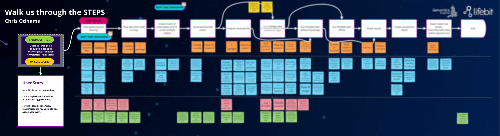
In parallel, our PM brought business constraints to the table: existing technical architecture meant our underlying hierarchy needed to remain largely unchanged, and existing features would be updated in separate initiatives.
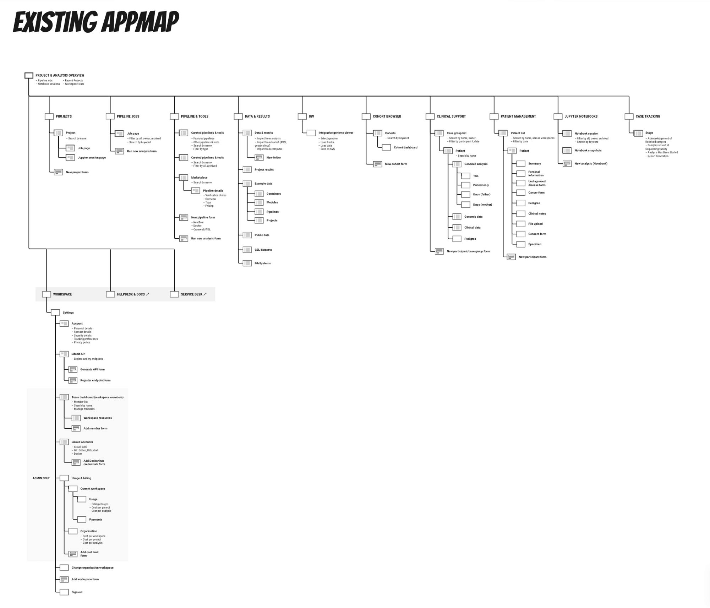
Defining scope and goals
Working alongside the project team, we converged on 3 core project objectives:
- Create a scalable system: Future-proof our information architecture so our software can continue to scale.
- Eliminate friction: Reduce the steps it takes for a user to jump back into their previous workflow.
- Improve accessibility and visual design: Make it clear to users where to go and pave the way for a new visual style for the app.
Exploratory research
To gain a deeper understanding of the problem space, we conducted three primary research activities:
- Heuristic analysis & IA Review: Evaluated our existing navigation against best-practice usability principles to identify baseline failures.
- Competitor & market analysis: Evaluated how market leaders structured information, focusing on hierarchy, labeling, and nested links.
- Card sorting with existing users: Ran asynchronous card sorting workshops across diverse user cohorts to uncover how researchers categorized platform content.
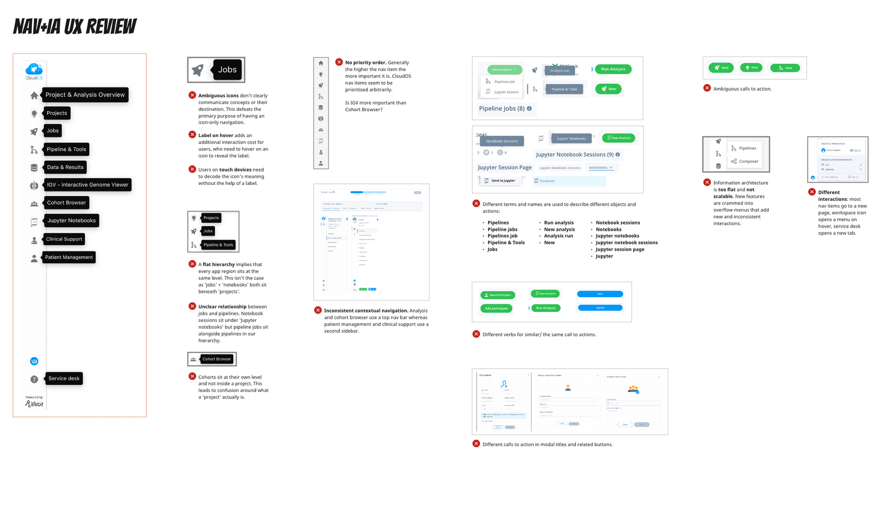
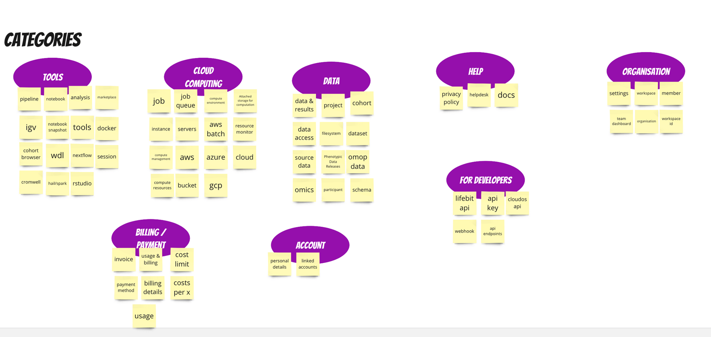
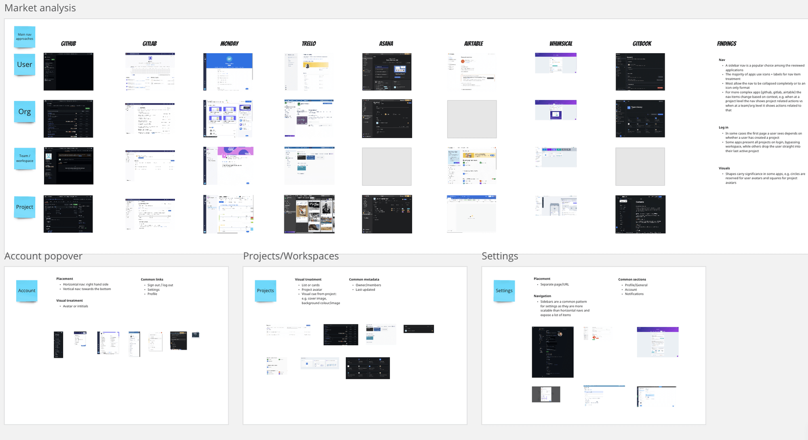
Following research synthesis, the team gathered to confirm research sufficiency before moving into system modeling.
Designing a new app map (OOUX)
After deepening our understanding of the problem space, we modeled our system and mapped relationships between different entities (objects) using Object-Oriented UX (OOUX). This enabled us to synthesize research findings into a clear structure aligned directly with user mental models.
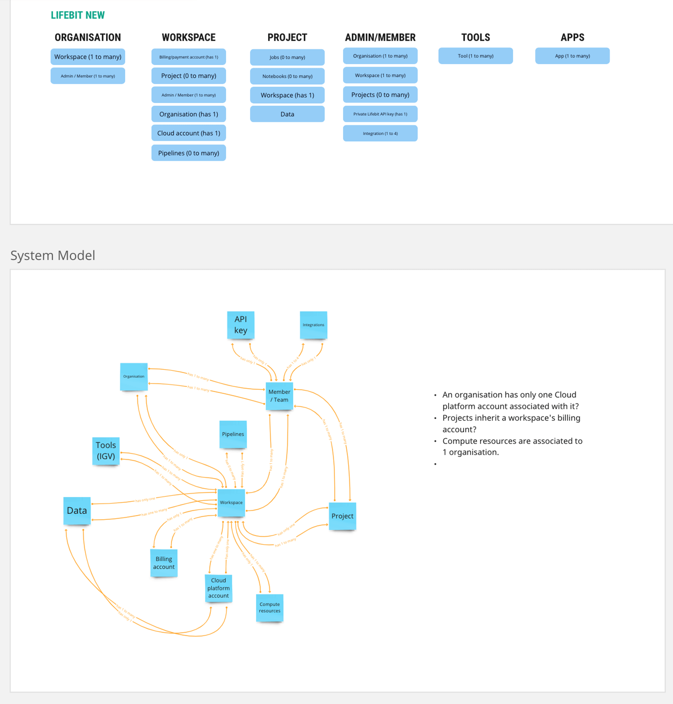
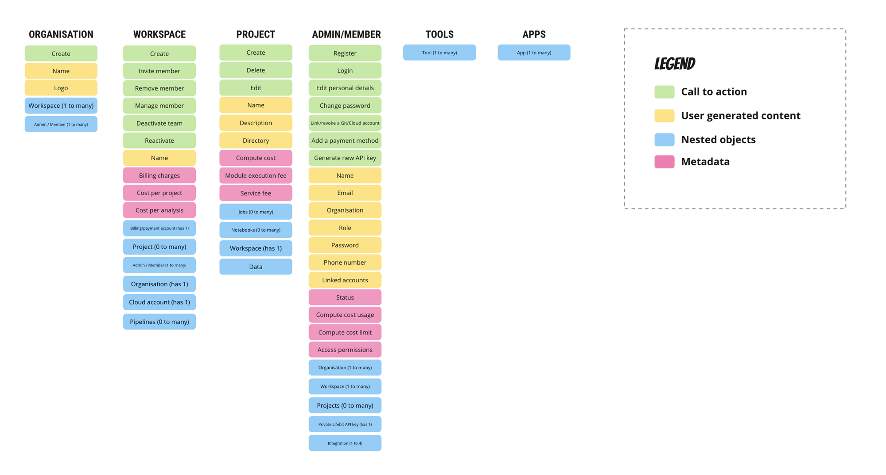
We mapped these objects to a redesigned application map. Compared to the legacy map, the proposed design introduced clear vertical hierarchy and logical grouping, replacing dumping grounds with scalable object spaces.
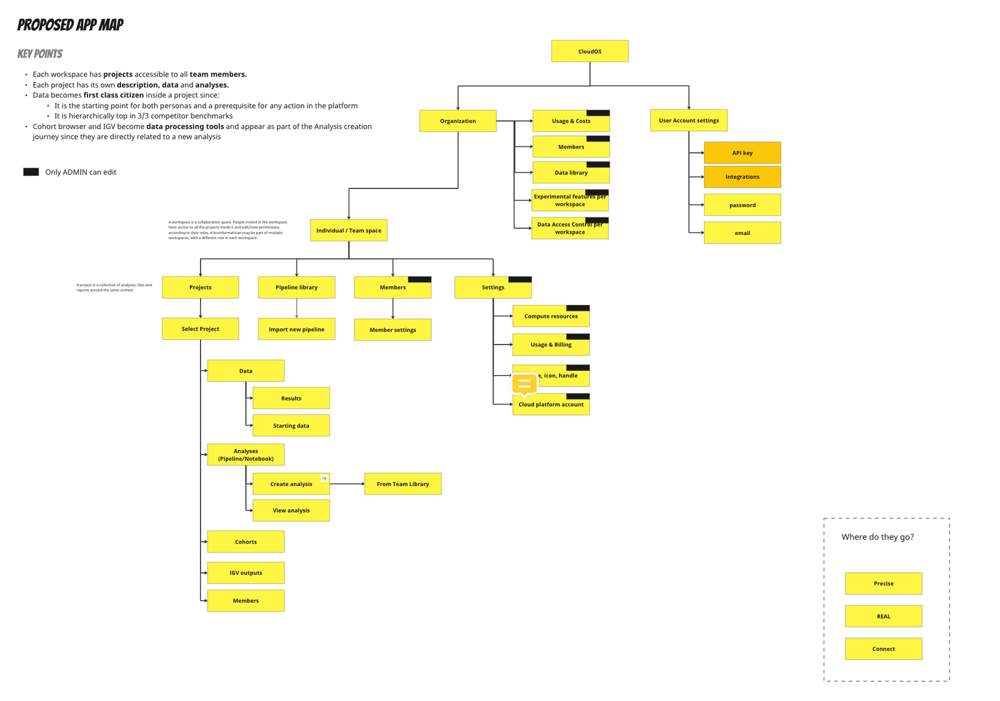
Note on validation:
While we would typically validate the app map using a tree test, tight project deadlines led us to consolidate testing into the navigation redesign phase, supported by high confidence from research findings.
Phase 2 — Navigation Redesign & Prototyping
Guiding design principles
We kicked off Phase 2 by analyzing visual navigation patterns across battle-tested SaaS applications, establishing 6 guiding design principles:
- Preserve sidebar navigation: Sidebar navigation remains preferred for data-heavy applications.
- Icons + explicit labels: Combine clear iconography with text labels for all nav items.
- Account identification: Include an avatar or initials for the account link.
- Contextual navigation: Implement dynamic secondary nav items based on the active page or level.
- Smart landing page: Ensure initial login directs users to relevant active contexts based on where they left off.
- Multi-path navigation: Provide alternative navigation shortcuts beyond the main sidebar.
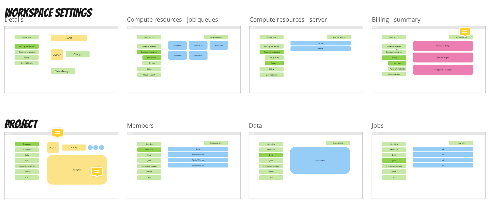
Sketching and wireframes
We elaborated on our object maps by defining detailed object attributes: call-to-actions, user-generated content, system metadata, and nested objects. Spatially arranging these objects produced content wireframes for all required pages.
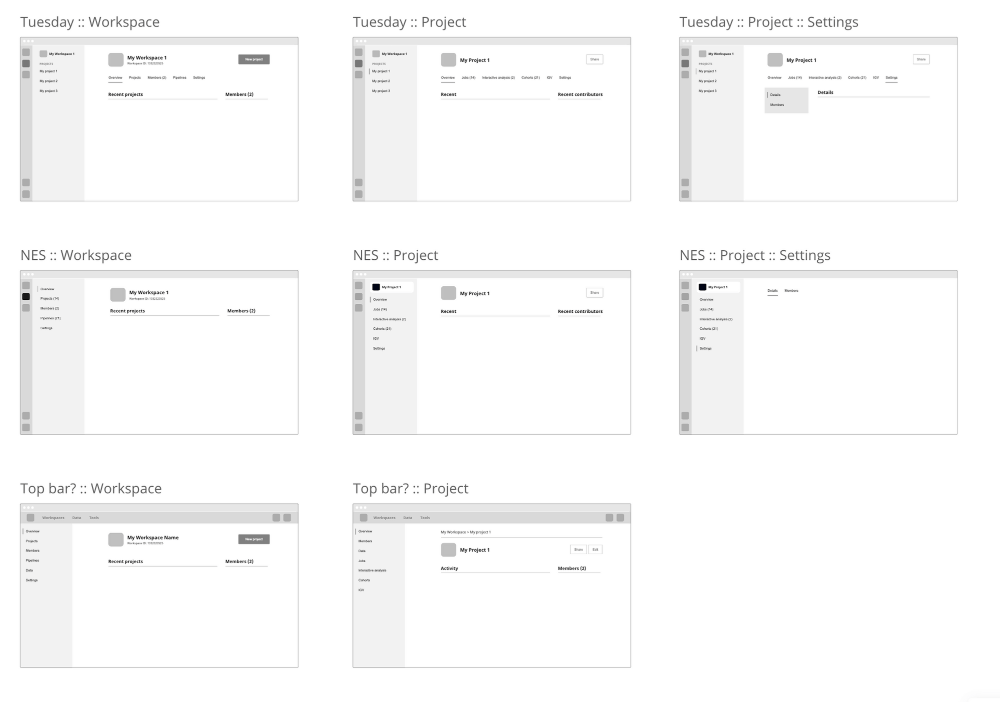
Prototyping and testing
We developed three functional prototype directions in Figma (devoid of color or branding to focus user feedback strictly on hierarchy and tasks). All three options used the redesigned app map, with variations in navigation patterns (Option 1: strict hierarchy; Options 2 & 3: rapid project/workspace switching).
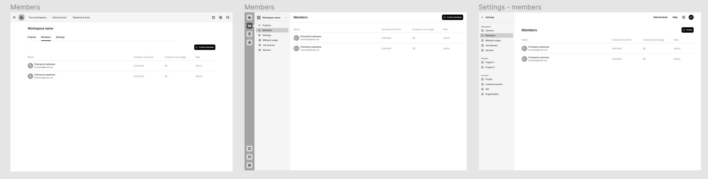
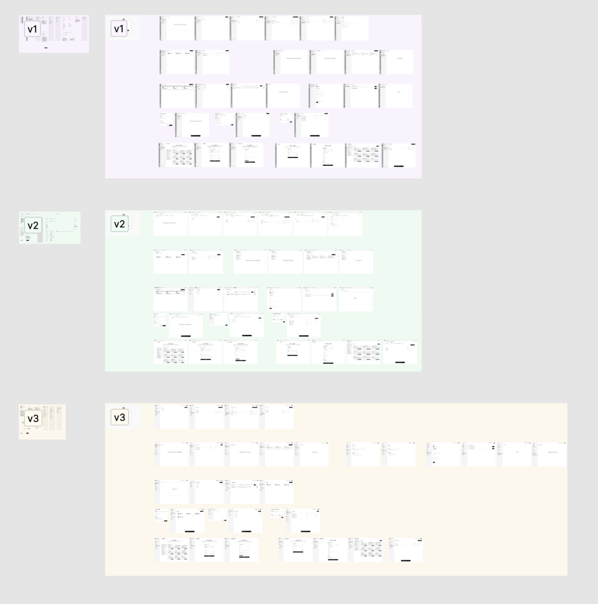
Next steps & unmoderated benchmarking
Usability benchmarking was executed via Maze as a summative test with over 20 active research participants, combining quantitative task completion with qualitative satisfaction metrics to converge on a single production pattern.
Predictable team cadence
To maintain momentum without meeting fatigue, we established bi-weekly 15–20 minute syncs. Each sync presented data-driven recommendations from the design team, directly generating actionable backlog items for subsequent rounds.
Phase 3 — Detailed Design & Engineering Hand-Off
Drafting developer-focused user stories
With problem spaces validated, we drafted detailed user stories detailing screen states, edge cases, and flow documentation so engineers could pick up tickets without ambiguity.
Detailed design & token library
We produced exhaustive screen specs broken into page layouts and component states. To bridge design and development, we collaborated with engineers to create a shared design token library, ensuring UI components in Storybook matched Figma mockups exactly.
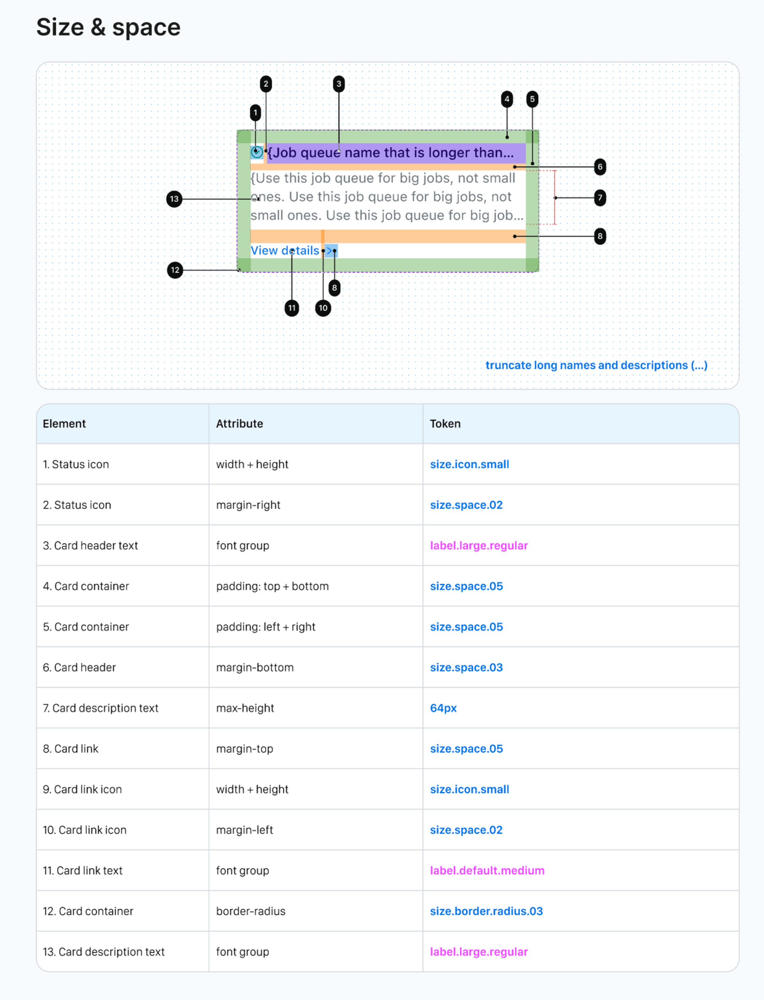
Implementation & Design QA
During build sprints, tech representatives validated feasibility while design provided continuous support to unblock development. The process concluded with a mandatory Design QA sign-off step prior to production deployment.
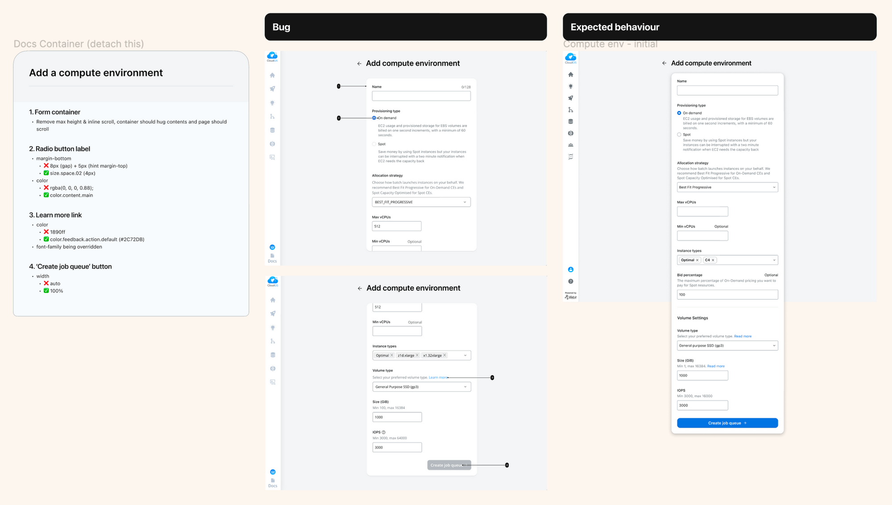
Results and outcomes
- Scalable IA Architecture: Future-proofed the platform hierarchy, providing dedicated homes for new roadmap features and removing settings dumping grounds.
- Eliminated Navigational Friction: Added explicit labels, contextual menus, and task resumption pathways to cut context-switching overhead.
- Design Token Integration: Created a shared token library synced between Figma and Storybook, eliminating hardcoded CSS values and reducing implementation bugs.
- Structured Design QA Governance: Established mandatory Design QA sign-offs and bi-weekly data syncs to align engineering and design execution.
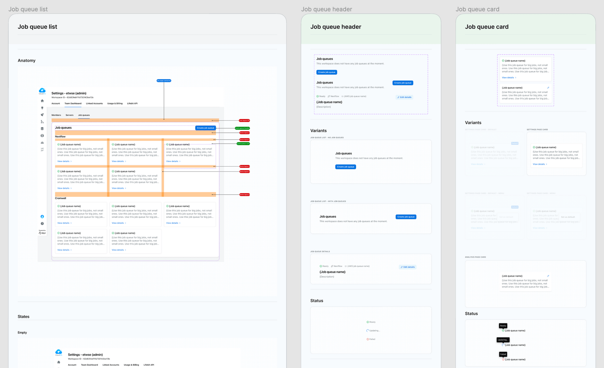
Reflection: Build, measure, learn?
While Lifebit established strong qualitative research mechanisms in early phases, a fully automated quantitative analytics framework post-launch remains an ongoing maturity goal. In an ideal continuous loop, features launch alongside quantitative tracking baselines to measure performance against milestones and drive iterative refinements.